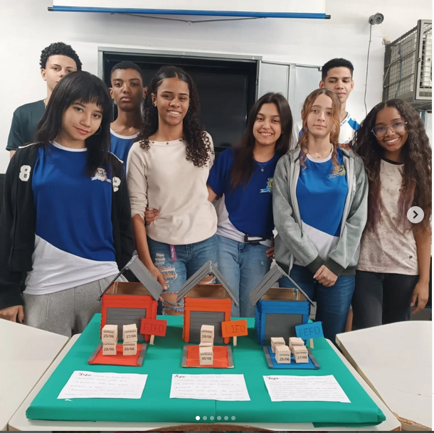
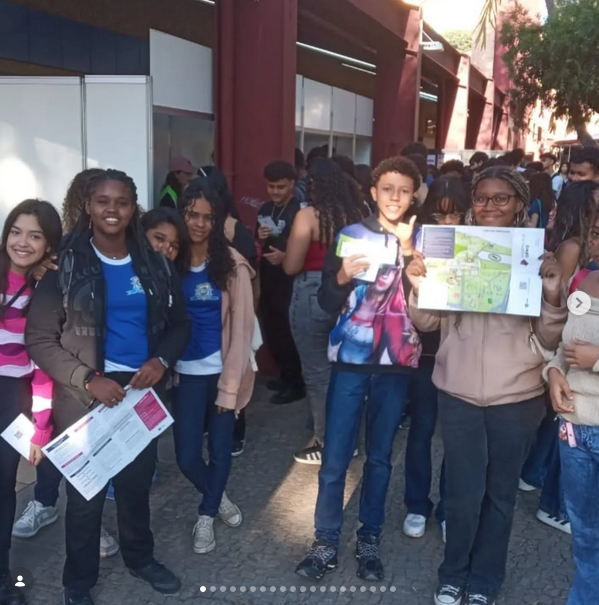

Já no Ensino Médio, oferecemos o regime integral, das 7h00 às 15h30.
Essa jornada ampliada reflete nosso valor mais caro: a formação integral do
ser humano.
Mais tempo na escola significa mais oportunidades de aprendizado,
projetos interdisciplinares, iniciação científica, arte, cultura, esporte e
protagonismo juvenil. Nossa equipe pedagógica planeja cada momento para que
os jovens desenvolvam não apenas competências acadêmicas, mas também
socioemocionais – como empatia, resiliência, trabalho em equipe e liderança
ética.

Em todas as etapas, nossa escola se rege pelos seguintes valores: Respeito – às pessoas, às regras coletivas, ao conhecimento e à diversidade. Responsabilidade – consigo mesmo, com os colegas, com a comunidade e com o futuro. Excelência com acolhimento – buscamos o melhor aprendizado possível sem jamais perder a gentileza e o cuidado. Curiosidade e protagonismo – estimulamos perguntas, iniciativas e a coragem de transformar a realidade. Pertencimento e cooperação – acreditamos que ninguém cresce sozinho; a escola é um lugar de parceria entre estudantes, famílias, professores e funcionários. Com horários pensados pedagogicamente e valores vividos em cada intervalo, cada aula e cada projeto, nossa escola forma jovens preparados para os desafios acadêmicos e, principalmente, para a vida em sociedade. Aqui, o tempo é aliado da aprendizagem, e os valores são a nossa bússola.

Agregado a nossa base curricular, o curso de logística de oferta um leque de oportunidades de atuar em várias áreas do mercado de trabalho, totalemnte gratuito . Esse curso pelo mec na rede particular gira em torno de 30 mil reais Agregado a esse curso são ofertadas as disciplinas básicas do ensino médio como : Matemática, Português, geografia, história etc...
Email: escola.10413@educacao.mg.gov.br
Telefone: (31) 3671 7513